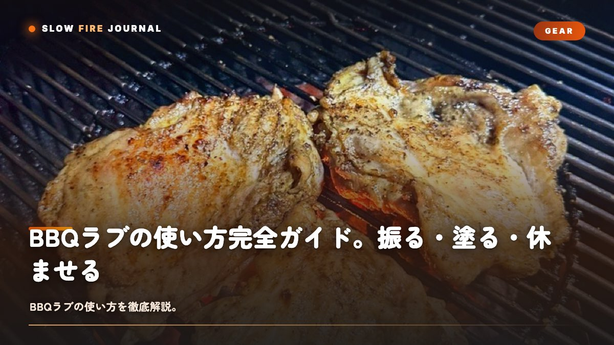

BBQラブの使い方完全ガイド。振る・塗る・休ませる、3ステップで味が変わる
いいラブを買ったのに、なんだか思ったほど味が決まらない……そんなモヤモヤ、ありませんか？ 実はそれ、ラブのせいじゃなくて、使い方のほうにちょっとした余白が残っているだけなんです。袋を開けて、肉に振って、休ませる——この3ステップこそが、ラブの価値を決めます。同じラブでも、振り方ひとつで仕上がりがまるで違ってくるんですよね。量の目安、振る高さ、寝かせ時間、ペリクル形成、肉ごとの最適手順まで、「ラブは買ったけど、で、これどう使うの？」という問いに、この記事でまるごとお答えしていきます。

ラブとは何か — 30秒でおさらい
BBQラブ（Rub）とは、塩・砂糖・スパイス・ハーブをブレンドした粉末状の下味調味料です。肉や魚に擦り込んで（"rub" = 擦る）下味をつけ、表面にバーク（外皮）を作るために使います。アメリカ南部のBBQ文化で発達した技法で、日本では「シーズニング」「ドライラブ」とも呼ばれます。
ラブの正体は、3つの役割の集合体です。
- 塩：味を決め、肉の水分を引き出して再吸収させる（ドライブライン効果）
- 砂糖：メイラード反応を促進し、バーク（外皮）を形成する
- スパイス・ハーブ：香りと風味を上乗せする
この3要素が機能するためには、正しい量・正しい振り方・正しい寝かせ時間が必要。ラブそのものの実力は半分、残りの半分は使い方が決めます。ラブの選び方については BBQラブの選び方。食材から逆算する5つの軸 で詳しく解説しています。
ラブを使う前に — 肉の準備
ラブを振る前の準備で、仕上がりの7割が決まります。大事なポイントは3つあります。
- 表面の水分を完全に拭き取る（キッチンペーパーで両面を強く押さえる）
- 余分な脂・銀皮を整える（厚すぎる脂は1cm程度に削ぐ、銀皮は剥がす）
- 室温に20〜30分戻す（冷蔵庫から出してすぐ振ると、結露で粉が湿る）
特に重要なのは水分の拭き取りです。表面が濡れているとラブが溶けて団子状になり、均一に乗りません。逆に乾いた表面に振ると、塩と砂糖が粒のまま留まり、ペリクル形成がスムーズに進みます。
マスタードベースという下準備
本場テキサスのピットマスターは、ラブを振る前にイエローマスタードを薄く塗ります。マスタードの粘度がラブの粒子を肉に密着させてくれて、香りは焼くと飛ぶので風味には残らないんですよね。オリーブオイル、米油、マヨネーズでも代用できますよ。密着＝バーク形成の精度、と覚えておいてください。
振り方 — 高さ・量・順番
ラブの振り方には、明確な「型」があります。プロのピットマスターが共通して守る3つのルールです。
ルール1：30〜40cmの高さから振る
低い位置（肉のすぐ上）から振ると、粒子が一箇所に集中してムラができます。肘より高い位置（30〜40cm）から、雪が降るようにゆっくり振ると、粒子が空中で分散し、肉の表面に均一に着地します。
ルール2：量は「肉が薄く色づく程度」
具体的な目安は、下の表のとおりです。料理の長さで量を変えてあげるのが鉄則ですね。
| 調理タイプ | ラブの量（肉1kgあたり） | 厚みの目安 |
|---|---|---|
| ロー&スロー（4時間〜） | 大さじ3〜4（30〜40g） | 表面が完全に粉で覆われる |
| ロースト（1〜3時間） | 大さじ2〜3（20〜30g） | 地肌が透けて見える程度 |
| ステーキ（10〜30分） | 大さじ1〜2（10〜20g） | うっすら色がついた程度 |
| 魚介（短時間） | 大さじ1（10g）以下 | ごく薄く |
ルール3：順番は「上→側面→下」、複数回に分けて重ねる
一気に全量振ると、塊になってしまうんですよね。2〜3回に分けて、各面に少しずつ重ねていくのが正解です。手順はこんな感じです。
- 肉の上面に1/3量を振る
- 側面（4辺）に1/3量を振る
- 裏返して、残り1/3量を振る
- 最後に指で軽く押さえて密着させる（こすらない）
塗り込むべきか、振りかけるべきか
「ラブ」という言葉から、ゴシゴシ擦り込むイメージを持つ人が多いですが、これは誤解です。
結論から言うと、振りかけて、軽く押さえる。本当にそれだけでいいんです。
強く擦り込んでしまうと、ラブの粒子が肉の繊維に押し込まれすぎて、表面で結晶化しません。結晶化しないということは、バークが育たないということなんですよね。海外のピットマスターは、ラブを振ることを「シーズン（season）する」と表現します。これは「季節を着せる」という意味で、肉に層を重ねていく感覚に近いのかなと思います。
| 振りかけ（推奨） | 強く塗り込み | |
|---|---|---|
| バーク形成 | ◎ きれいに育つ | × 表面に層ができない |
| 味の浸透 | ○ 時間と塩で進む | △ 一見浸透して見えるが粒が消える |
| 見た目 | ◎ 美しい焼き面 | △ ペーストっぽい質感 |
| 失敗リスク | 低い | 高い |
例外として、マスタードや油の下塗りをした場合は、軽く手で広げてもOK。これは塗り込みではなく、密着のための一手間です。
寝かせ時間 — 30分？一晩？（ペリクル形成）
ラブを振った直後に焼くか、一晩寝かせるか。これは仕上がりを大きく分ける選択です。
ここでのキーワードはペリクル（Pellicle）です。ラブを振った肉を冷蔵庫で寝かせると、表面に薄く粘り気のある膜ができてきます。この膜が、スモークの粒子と焼き色の付き方を決定的に変えてくれるんですよね。
調理時間別の寝かせ時間
| 調理タイプ | 寝かせ時間 | 目的 |
|---|---|---|
| ブリスケット・プルドポーク | 前日仕込み（8〜12時間） | 深い味浸透＋強固なペリクル |
| スペアリブ・ポークショルダー | 4〜6時間 | 味浸透＋ペリクル形成 |
| ローストチキン・ターキー | 2〜4時間 | 皮のパリッと感を出す |
| 厚切りステーキ | 30分〜1時間 | 表面の塩なじみ |
| 薄切り肉・魚介 | 10〜30分（または直前） | 過剰な塩抜けを防ぐ |
寝かせる時の3つのコツ
- 冷蔵庫で、ラップをせずに寝かせる（空気を通すことで表面が乾き、ペリクルができる）
- 網に乗せて、肉の下にも空気が通る状態にする
- 24時間を超えると、塩分で肉から水分が出すぎる。最大24時間が目安
肉別の最適手順（牛・豚・鶏）
食材ごとに、ラブの量・寝かせ時間・下準備が変わります。食材軸でのラブ選びと合わせて使ってください。
牛肉 — 塩を主役に、シンプルに
- 厚切りステーキ・トマホーク：塩を先に振り20分置く → ラブを振る → 30分〜1時間休ませる → リバースシアで焼く
- ブリスケット：前日にマスタード薄塗り → SPGベースのラブを大さじ3〜4 / kg → 一晩寝かせる → 朝からロー&スロー（ブリスケットの作り方）
- おすすめラブ：Steak Shooter（ステーキ）、Butcher's Axe「Stampede」（厚切り全般）
豚肉 — 甘みと醤油でレイヤーを作る
- プルドポーク：マスタード塗り → ハチミツ系ラブを大さじ4 / kg → 一晩寝かせる → 12時間ロー&スロー（プルドポークの作り方）
- スペアリブ：薄油塗り → 砂糖多めのラブを大さじ3 / kg → 4時間寝かせる → 3-2-1法でスモーク
- 豚ステーキ：油塗り → ラブを大さじ2 / kg → 30分寝かせる → 中火で焼く
- おすすめラブ：Pork Crackle、Stef the Maori「Original」
鶏肉 — シトラスとハーブで輪郭を出す
- ローストチキン（丸鶏）：表面と腹腔内にラブを大さじ3 / kg → 2〜4時間冷蔵庫で乾燥 → 皮をパリッと焼く
- チキンレッグ：油塗り → ラブを大さじ2 / kg → 1時間寝かせる → 直火で焼く
- 胸肉（パサつき注意）：ブライン（塩水）に1時間 → ラブを大さじ1 / kg → 直前に焼く
- おすすめラブ：シトラス系・ハーブ系のラブを ラブの選び方記事 から
よくある失敗と対策
ラブの使い方で、初心者が踏みがちな失敗は決まっています。先回りして対策しましょう。
| 失敗パターン | 原因 | 対策 |
|---|---|---|
| 塩辛くなりすぎた | 塩分の強いラブを規定量振った | 規定量の7割から始める。バターや蜂蜜で中和 |
| ラブが団子状に固まる | 肉の表面が濡れていた | キッチンペーパーで完全に拭く |
| バークができない | 強く擦り込みすぎた | 振りかけて軽く押さえるだけにする |
| 味が表面だけで中が薄い | 寝かせ時間が短い | 厚みのある肉は4時間以上寝かせる |
| 表面が真っ黒に焦げた | 砂糖系ラブを高温（200℃以上）で焼いた | 低温長時間（110〜130℃）で焼く |
| 香りが弱い | 古いラブ、または振りすぎ前に時間置きすぎ | 開封後6ヶ月以内のラブを使用。寝かせ24時間以内 |
最大の失敗は「ラブを諦めること」
「振りすぎた」「焦げた」——こうした失敗って、実はすべて振り方の精度で解決できるんです。ラブが悪いのではなく、扱い方のほうが変数なんですよね。3〜4回も試せば、自分の肉と火力に合った量と時間が、必ず見つかります。ラブは、料理を設計するための言語のようなもの。一度覚えてしまえば、もう二度と外しませんよ。
FAQ
BBQラブの使い方についてよくある質問
BBQラブはどれくらいの量を振ればいいですか？
肉の重量1kgあたり大さじ2〜3（約20〜30g）が基本の目安です。表面が薄く色づく程度に均一に振り、指で軽く押さえて密着させます。長時間調理（ロー&スロー）ならバーク形成のために多め、短時間のステーキ調理は素材を活かすために控えめ。塩分の強いラブは少なめから始めて、足りなければ追加するのが安全です。
ラブの正しい振り方は？
30〜40cm程度の高さから、肉の上を雪が降るようにゆっくり振るのが基本。高い位置から振ることで粒子が均一に分散し、ムラがなくなります。順序は「塩 → ラブ → 軽く押さえる」。両面と側面、すべての面に同量を振り、最後に軽く押し付けて密着させます。一気に大量に振ると塊になるので、必ず複数回に分けて重ねるのがコツです。
ラブは塗り込むのと振りかけるの、どっちが正解？
結論は「振りかけ＋軽く押さえる」が基本。ゴシゴシ塗り込むと、ラブの粒子が肉の繊維に押し込まれすぎて表面で結晶化せず、バーク（外皮）が育ちません。マスタードや油で薄く下塗りしてからラブを振ると、密着力が上がり余分な塗り込みも不要になります。
ラブを振ってから何時間寝かせるべき？
調理時間によって変えます。ロー&スロー（4時間以上）は前日仕込み（8〜12時間）、ロースト（1〜3時間）は2〜6時間前、ステーキは振ってすぐ〜30分前で十分。寝かせる目的は「ペリクル」と呼ばれる表面の薄い粘膜層を作ること。これがスモークと焼き目をよく吸着させます。冷蔵庫でラップをせずに寝かせるのが理想です。
ラブを振りすぎた／塩辛くなった場合は？
焼く前なら、キッチンペーパーで余分なラブを優しく拭き取ります。焼き始めてしまった後では、表面にバター・蜂蜜・りんごジュースを塗ることで塩味を中和できます。次回からは、塩分が強いラブは規定量の7割から始めるのが安全。塩は後から足せても、引くことはできません。
PERFECT WITH
使い方を試してほしい4本
振り方・寝かせ方の練習にちょうどいい、SLOW FIREの定番